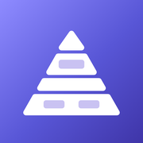

磊记 · Cairnote
隐私政策 · Privacy Policy
隐私政策
生效日期：2026 年 10 月 18 日
「磊记」（英文名 Cairnote，以下简称「本 App」）是一款本地优先的笔记与记忆复习应用，由个人开发者 Henry 开发和运营。我们非常重视你的隐私：本 App 不要求注册账号，不收集你的个人信息，也不会把你的笔记上传到我们的服务器——我们没有任何服务器。
1. 你的数据保存在哪里
你在本 App 中创建的笔记、图片、PDF、录音、复习记录和个人资料（用户名、头像）都只保存在你的设备上。我们无法查看、访问或恢复这些内容。
2. iCloud 备份（可选）
如果你主动使用「上传当前数据到 iCloud」功能，数据会保存到你自己的 iCloud 私有空间，由 Apple 提供存储和保护，只有登录同一 Apple 账户的设备可以读取。我们无法访问你的 iCloud 数据。你可以随时在 iPhone「设置 → Apple 账户 → iCloud」中管理或删除。
3. 设备权限
- 麦克风：仅在你主动录制语音时使用，录音保存在本机。
- 相机 / 照片：仅在你主动拍照或选取图片插入笔记、设置头像时使用。
- 通知：仅在你开启「复习提醒」后，用于每日提醒和桌面角标。
你可以随时在 iPhone「设置 → 磊记」中关闭这些权限。
4. 朗读与文字识别
朗读（文字转语音）和 PDF / 图片中的文字识别，都使用 iPhone 系统自带能力在设备上完成，内容不会发送给我们。
5. 购买与订阅
订阅和永久版购买由 Apple 通过 App Store 处理。我们不会获得你的支付信息，只会从 Apple 收到「是否已购买」的验证结果，用于开启相应功能。
6. 统计与第三方服务
本 App 不包含广告，不使用第三方统计、追踪或崩溃收集工具，也不会与任何第三方共享你的数据。如果你在 iPhone 设置中同意向 Apple 共享分析数据，Apple 可能会向开发者提供匿名的崩溃报告和使用统计，这由 Apple 的隐私政策管理。
7. 小组件与分享扩展
桌面小组件和「分享到磊记」功能只在你的设备上、本 App 与其扩展之间传递数据（例如今日待复习数量、你分享的文字和图片）。
8. 删除你的数据
在 App 中删除笔记即可删除对应内容；删除本 App 会清除设备上的全部 App 数据。iCloud 备份可在 iPhone 的 iCloud 设置中删除。删除前建议先使用「导出完整备份」保存一份。
9. 儿童隐私
本 App 不收集任何人的个人信息，包括 13 岁以下的儿童。
10. 政策更新与联系方式
如本政策有变更，我们会在此页面更新并修改生效日期。如有任何问题，请联系：jhonyr@163.com
Privacy Policy
Effective date: October 18, 2026
Cairnote (磊记, “the App”) is a local-first note-taking and memory-review app developed and operated by independent developer Henry. The App does not require an account, does not collect personal information, and never uploads your notes to us — we don’t run any servers.
1. Where your data is stored
Notes, images, PDFs, voice recordings, review history and profile details (name and avatar) you create are stored only on your device. We cannot see, access or recover them.
2. iCloud backup (optional)
If you choose “Upload to iCloud”, your data is saved to your own private iCloud storage, provided and protected by Apple and readable only by devices signed in to the same Apple Account. We have no access to it. You can manage or delete it any time in Settings → Apple Account → iCloud.
3. Device permissions
- Microphone: only when you record a voice note. Recordings stay on your device.
- Camera / Photos: only when you take or choose a picture for a note or your avatar.
- Notifications: only if you turn on review reminders, for daily reminders and the app badge.
You can turn these off any time in Settings → Cairnote.
4. Read-aloud and text recognition
Read-aloud (text-to-speech) and text recognition in PDFs and images use built-in iPhone features on your device. The content is never sent to us.
5. Purchases and subscriptions
Subscriptions and the Lifetime purchase are processed by Apple through the App Store. We never receive your payment details; we only receive Apple’s verification of whether you have purchased, to unlock features.
6. Analytics and third parties
The App has no ads and uses no third-party analytics, tracking or crash-reporting tools, and does not share your data with anyone. If you agree in iPhone Settings to share analytics with Apple, Apple may provide developers with anonymous crash reports and usage statistics under Apple’s privacy policy.
7. Widget and Share extension
The Home Screen widget and “Save to Cairnote” share extension only pass data between the App and its extensions on your device (for example, today’s due count, or text and images you share).
8. Deleting your data
Deleting a note in the App deletes its content. Deleting the App removes all of its data from your device. iCloud backups can be deleted in your iPhone’s iCloud settings. We recommend exporting a full backup first.
9. Children’s privacy
The App does not collect personal information from anyone, including children under 13.
10. Changes and contact
If this policy changes, we will update this page and its effective date. Questions? Contact henryleay@gmail.com